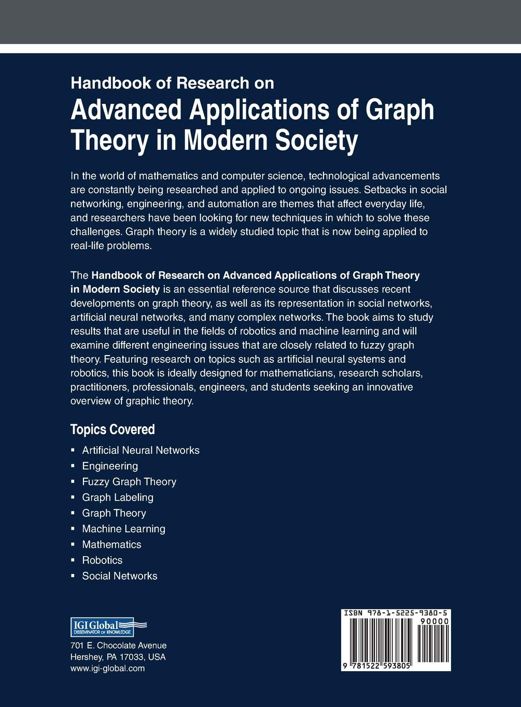
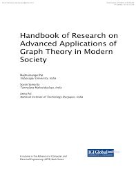
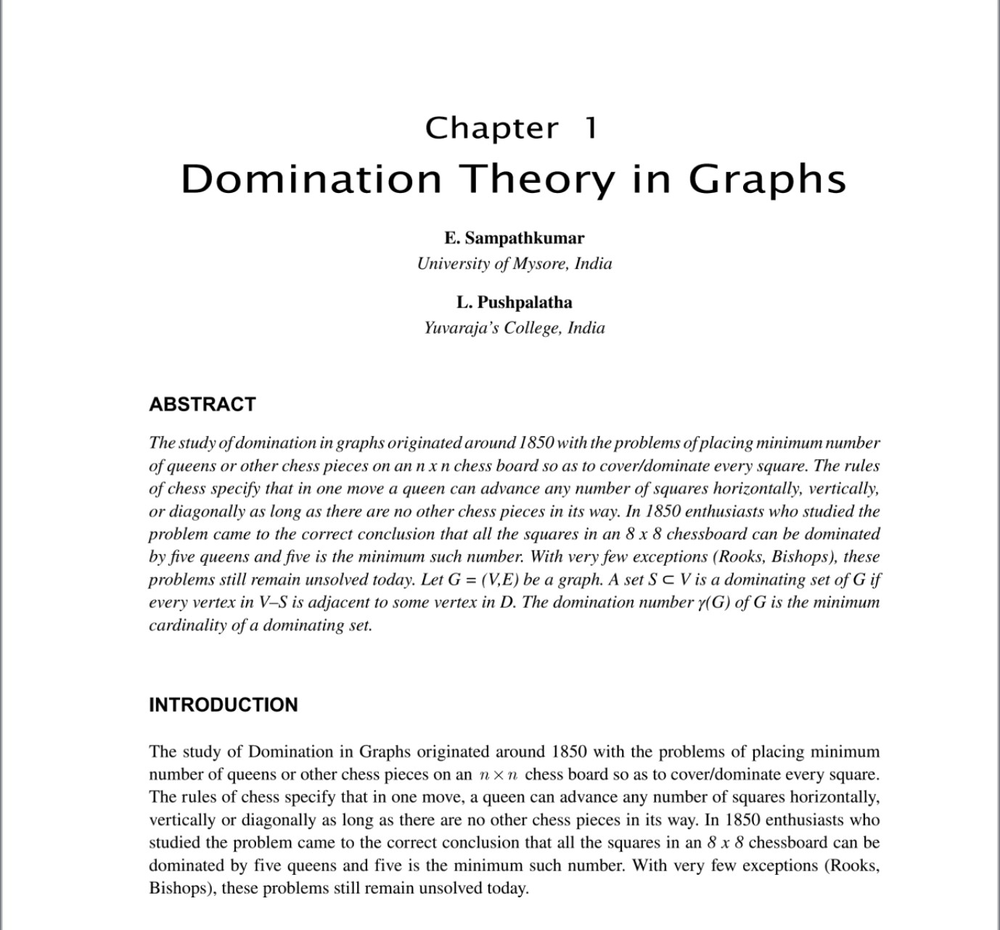

$249.99
Best Seller this month : Guns, Germs, and Steel
$249.99
Handbook of Research on Advanced Applications of Graph Theory in Modern Society
In the world of mathematics and computer science, technological advancements are constantly being researched and applied to ongoing issues.
Setbacks in social networking, engineering, and automation are themes that affect everyday life, and researchers have been looking for new techniques in which to solve these challenges.
Graph theory is a widely studied topic that is now being applied to real-life problems.
The Handbook of Research on Advanced Applications of Graph Theory in Modern Society is an essential reference source that discusses recent developments on graph theory, as well as its representation in social networks, artificial neural networks, and many complex networks.
The book aims to study results that are useful in the fields of robotics and machine learning and will examine different engineering issues that are closely related to fuzzy graph theory.
Featuring research on topics such as artificial neural systems and robotics, this book is ideally designed for mathematicians, research scholars, practitioners, professionals, engineers, and students seeking an innovative overview of graphic theory.